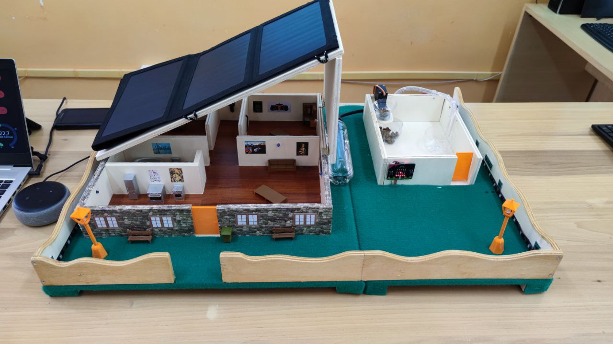

Vincitore · Olimpiadi nazionali di Problem Solving 2022
Smart Domotic System

Modello di casa domotica controllabile con Alexa, abbinato a una cuccia intelligente per cani. Il progetto mi è valso la vittoria nazionale delle olimpiadi di problem solving nel ramo makers.
DomoticaAlexaArduinoESP8266micro:bit